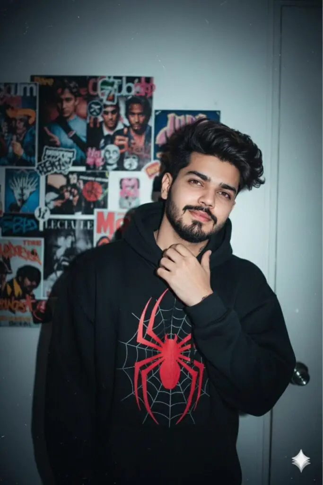
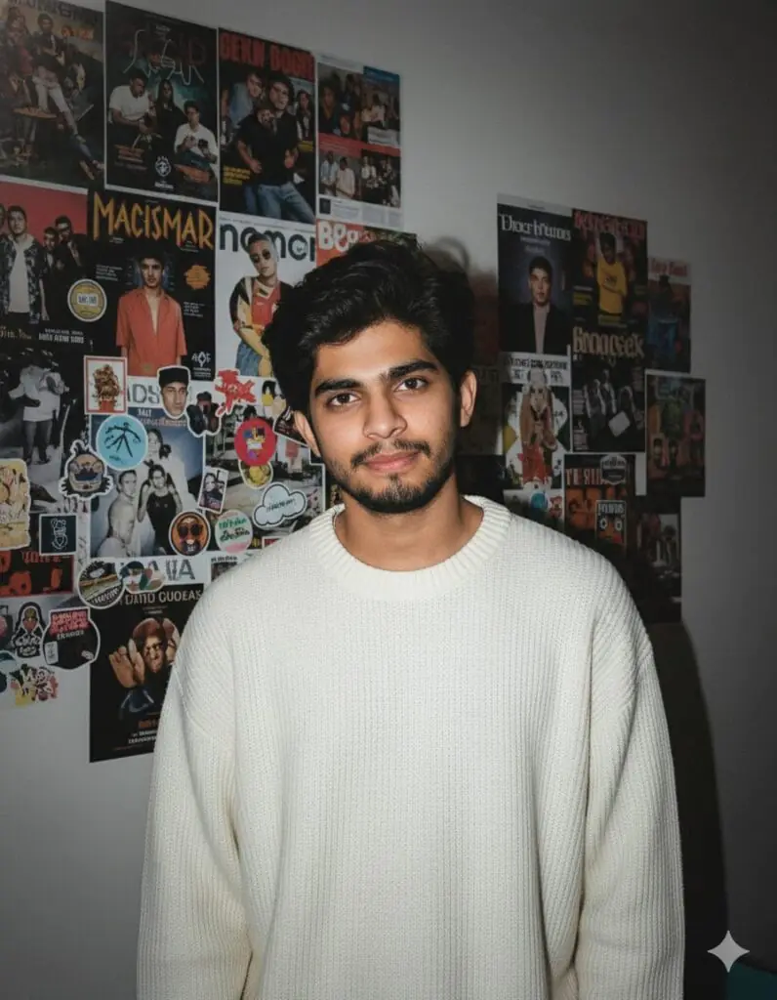
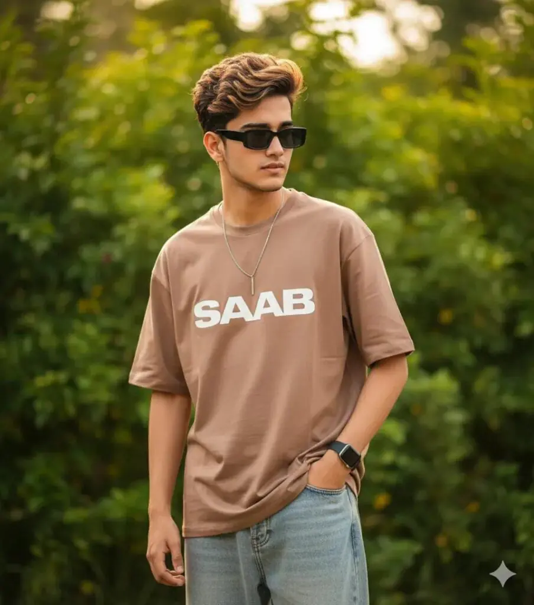
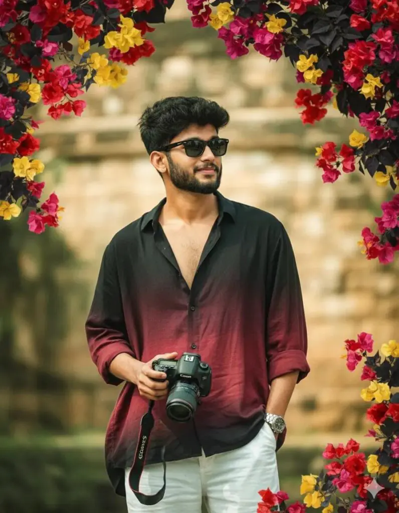
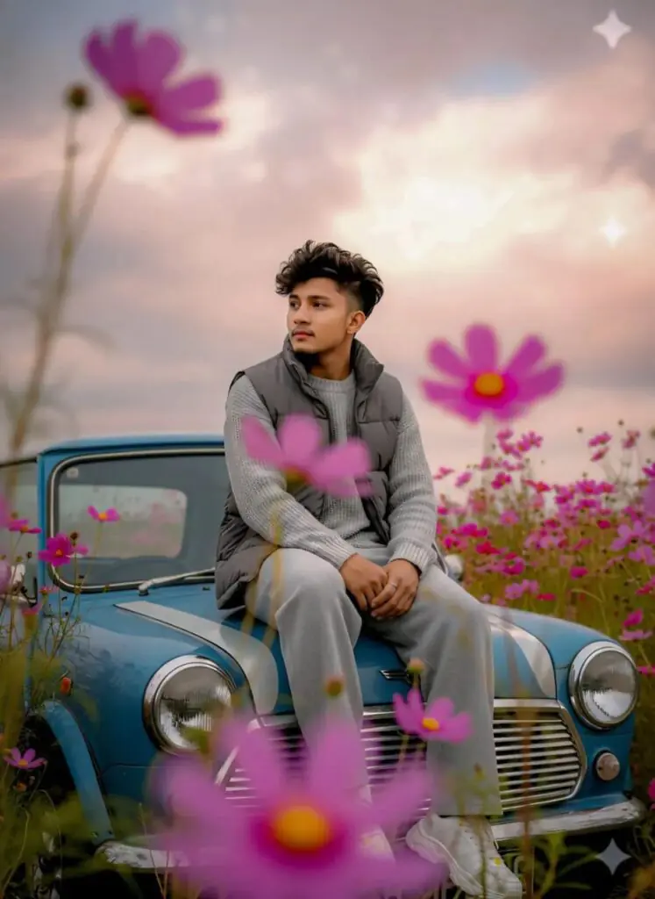

In this article you will find the latest Gemini aesthetic photo editing prompts for boys. There are 6 free prompts below — a 1990s flash portrait, an oversized sweater look, an outdoor streetwear shot, a Ferrari jacket mirror selfie, a cinematic camera portrait and a Mini Cooper flower field scene. Every prompt works in Gemini, ChatGPT and Nano Banana. Just tap a prompt to copy it, upload your own photo, and paste.
Want more awesome prompts?
Join our community and get the latest viral prompts daily.
Follow on Instagram1990s Flash Portrait Prompt

? AI PROMPT
Without changing my original face, create a portrait of me captured with a 1990s-style camera using a direct front flash but not my eyes. My messy dark brown hair, posing with a calm yet playful smile like in the picture. Me wears a modern oversized black hoodie with red spider with web in centre The background is a dark white wall covered with aesthetic magazine posters and stickers, evoking a cozy bedroom or personal room atmosphere under dim lighting And my one hand is on my neck
Oversized Cream Sweater Prompt

? AI PROMPT
Without changing his original face, create a portrait ofa beautiful young man, captured with a 1990s-stylecamera using a direct front flash. His messy darkbrown hair, posing with a calm yet playful smile. hewears a modern oversized cream sweater. Thebackground is a dark white wall covered withaesthetic magazine posters and stickers, evoking acozy bedroom or personal room atmosphere underdim lighting.
Outdoor Streetwear Prompt

? AI PROMPT
create image. A stylish young man with messy volume hair, posing outdoors in a vibrant natural setting. He's wearing an oversized light brown T-shirt withand a 'SAAB' logo, buggy jeans, rimless rectangular black sunglasses, a vertical bar pendant, and a black Apple Watch. The background is lush, softly blurred greenery with cinematic lighting, creating an ultra-realistic 8K DSLR-quality image
Ferrari Jacket Mirror Selfie Prompt

? AI PROMPT
Create a hyper-realistic mirror selfie of me (use uploaded face) tousled black hair, wearing black sunglasses, wearing the same black Ferrari racing jacket with red and yellow patches, black t-shirt underneath, silver rings, and chain. I'm holding a phone with a beige MagSafe case, posing in a dimly lit modern bathroom with dark marble walls. The lighting is soft and moody, capturing the same hairstyle, pose, and reflection angle as in the reference image stylish, confident, cinematic vibe
Cinematic Camera Portrait Prompt

? AI PROMPT
Creat a 8k hyper-realistic dark green portrait cinematic image with dramatic smile actions.(uploaded photo 100% face match) of A stylish handsome young man (refrence image given) with a slightly dark messy hairstyle and wearing a lose black & maroon gradient half lineing shirt and white lose pant. He hold a Canon camera, He is looking thoughtfully off-camera, captured in a candid, high-key cinematic outdoor portrait The composition is framed by a branch of vivid red/pink/yellow/black
Mini Cooper Flower Field Prompt

? AI PROMPT
Ultra-realistic editorial close-up portrait, vertical 9:16. Scene: A young man (use uploaded image as face reference) sits relaxed on the hood of an old, faded-blue Mini Cooper. The frame captures him from the waist up, with the car’s curved hood and chrome details subtly visible in front. Surrounding him are tall pink–magenta wildflowers, some close to the lens and softly blurred to create a dreamy bokeh veil and parallax depth. Behind the car, dense paste
Just Click On Any Prompt to Copy. Easy Process.
How to Use These Aesthetic Prompts for Boys
- Open Gemini, ChatGPT or any AI image tool you already use.
- Upload one clear, front-facing photo of yourself in good light — this decides how closely the face matches.
- Copy any prompt above and paste it together with your photo.
- If the face changes, add “keep face 100% same as uploaded photo” and generate again.
You can swap the outfit colour, the location or the lighting in any prompt to get a fresh result without rewriting the whole thing.